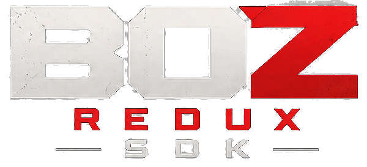

The client
Play on your desktop with configurable controls, display settings, and mod support.
The original Android game on Windows and Linux, with keyboard and mouse controls and tools for making your own mods.
Play on your desktop with configurable controls, display settings, and mod support.

Write Lua mods, build maps in Blender, and edit weapons, models, sounds, and game data.
The client requires your own Android 1.0.11 APK. Game files aren't included.
For APK availability and help getting set up, visit the community Discord.
Join Discord ↗BOZ Redux and its SDK were developed using human-guided generative AI. This project was made out of nostalgia for the Black Ops Zombies mobile game, I understand people may have concerns about AI-assisted development. I want to be transparent about the tools used and the human effort involved in creating this project. This project is primarily for fun and as a showcase of what AI can do. If there are more questions, join the community discords and feel free to ask!
Contribute to the project →
This Project was made on the back of giants. This project would not have been possible without the
cod-boz-port by Producdevity, which was the first open-source project to reverse engineer
the original Black Ops Zombies mobile game. My kindest regards to Producdevity for their work!
Based on cod-boz-port by Producdevity.
Built with Unicorn, SDL2, Blender, destin by Tatsh, Ghidra, and Recast Navigation.
Third-party notices ↗